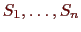
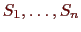

Next: Branch and Cut Up: Technical Details Previous: Technical Details
Branch and bound is the broad class of algorithms from which
branch, cut, and price is descended. A branch and bound algorithm uses
a divide and conquer strategy to partition the solution space into
subproblems and then optimizes individually over each
subproblem. For instance, let
 be the set of solutions to a given
problem, and let
be the set of solutions to a given
problem, and let
 be a vector of costs associated
with members of S. Suppose we wish to determine a least cost member of
S and we are given
be a vector of costs associated
with members of S. Suppose we wish to determine a least cost member of
S and we are given
 , a ``good'' solution determined
heuristically. Using branch and bound, we initially examine the entire
solution space
, a ``good'' solution determined
heuristically. Using branch and bound, we initially examine the entire
solution space
 . In the processing or bounding phase,
we relax the problem. In so doing, we admit solutions that are not in
the feasible set
. In the processing or bounding phase,
we relax the problem. In so doing, we admit solutions that are not in
the feasible set
 . Solving this relaxation yields a lower bound on
the value of an optimal solution. If the solution to this relaxation
is a member of
. Solving this relaxation yields a lower bound on
the value of an optimal solution. If the solution to this relaxation
is a member of
 or has cost equal to
, then we are
done--either the new solution or
, respectively, is optimal.
Otherwise, we identify
or has cost equal to
, then we are
done--either the new solution or
, respectively, is optimal.
Otherwise, we identify
 subsets of
subsets of
 ,
, such
that
,
, such
that
 . Each of these subsets is called a subproblem;
are sometimes called the children of
. Each of these subsets is called a subproblem;
are sometimes called the children of
 . We add the children of
. We add the children of
 to the list of candidate subproblems (those which need processing). This is called
branching.
to the list of candidate subproblems (those which need processing). This is called
branching.
To continue the algorithm, we select one of the candidate subproblems and process it. There are four possible results. If we find a feasible solution better than , then we replace with the new solution and continue. We may also find that the subproblem has no solutions, in which case we discard, or prune it. Otherwise, we compare the lower bound to our global upper bound. If it is greater than or equal to our current upper bound, then we may again prune the subproblem. Finally, if we cannot prune the subproblem, we are forced to branch and add the children of this subproblem to the list of active candidates. We continue in this way until the list of active subproblems is empty, at which point our current best solution is the optimal one.
Ted Ralphs